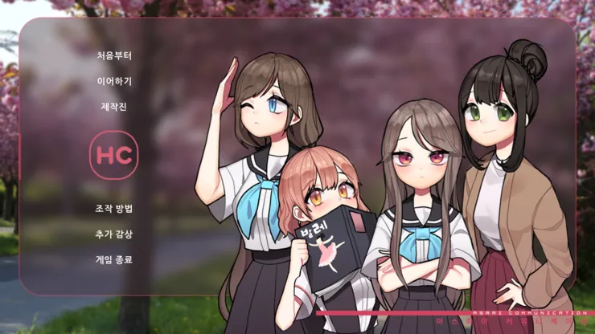
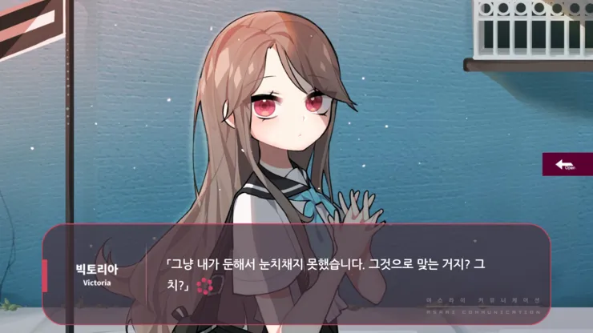
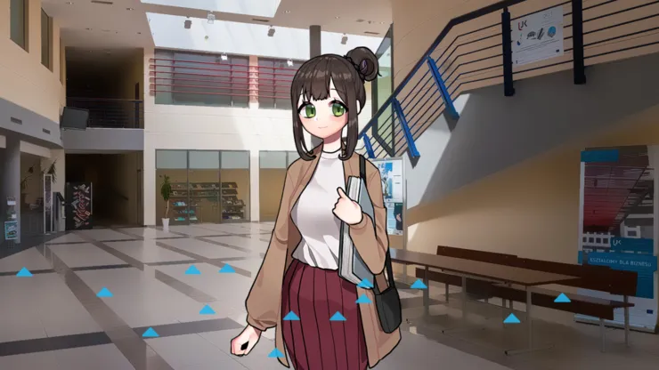
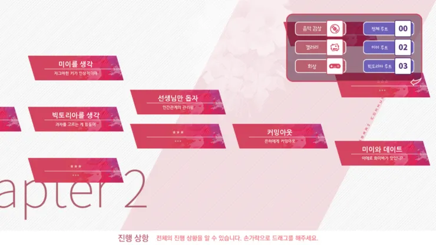
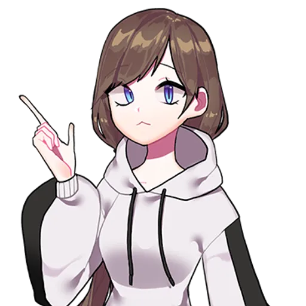

프로젝트 22 · 2019.02.14 발매
지루한 일상, 색다른 것을 원하는 주인공.
그리고 하나둘 늘어가는 이상한 인연들.
수업은 지루하고, 신작 게임이 나오기까지는 아직 한 달. 색다른 것을 원하며 지내던 어느 날, 자판기 앞에서 이상한 여자아이를 만난다. 야자를 째고 돌아다니는 시내에서, 학교에서, 집 앞에서 조금씩 늘어가는 인연. 평범했던 일상에 스며드는 색다른 사람들. 그리고 서서히 드러나는 각자의 사정.
평범한 학교 생활 속에서 펼쳐지는 이야기. 다양한 선택지를 통해 호감도를 쌓아 올리며 다양한 엔딩을 감상할 수 있습니다.

강제 야간자율학습을 어떻게든 빠져나가려는 주인공. 선생님의 감시를 피해 교실을 빠져나가고, 시내를 돌아다니며 색다른 일상을 찾아 나선다.

키가 작아 자판기에 손이 닿지 않는 미이. 항상 자판기 앞에서 낑낑대고 있다. 주인공이 지나갈 때마다 미에로 화이바를 대신 뽑아준다.

과자 고르기를 유난히 어려워하는 빅토리아와 자주 가는 해외 과자점. 영국 유학파인 그녀는 과자에 진심이다.

과학실을 지나가다 살이 찐다거나, 언론은 믿을 수 없다거나. 은하의 대화는 항상 영문을 알 수 없다.
이야기를 이끌어가는 인물들.
자판기 앞에서 항상 낑낑대는 작은 체구의 소녀. 미에로 화이바를 좋아한다. 무용(발레)을 오래 해서 그만둘 수 없게 되었다고. 집에서는 구속받는 느낌이 강해 밖에 있는 것을 좋아한다. "선배는 만만해요"라고 당당하게 말하는 그녀.
영국 유학파. 본명이 따로 있지만 유학 때 썼던 이름을 그대로 사용 중. 과자 고르기를 유난히 어려워한다. 한국의 시선 문화에 지쳐 있으며, 트렌드에 민감하다.

영문을 알 수 없는 대화를 자주 하는 인물. "과학실을 지나가다 살이 찐다", "언론은 믿을 수 없다" 등 이해하기 어려운 말을 한다. 하지만 그 안에는 나름의 논리가 숨겨져 있다.
야자를 째려는 주인공을 항상 붙잡는 담임 선생님. 위압감 있는 목소리로 "알겠지?"를 반복한다. 하지만 결국 주인공의 사정을 봐주는 자상한 면도 있다.
지루한 일상에 찾아온 색다른 인연, 당신의 선택으로 다양한 결말을 감상하세요.
설명 내용이 여기에 들어간다.